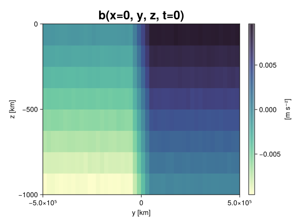
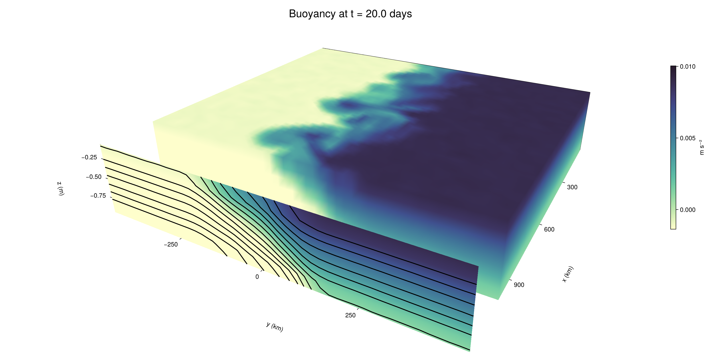

Baroclinic adjustment
In this example, we simulate the evolution and equilibration of a baroclinically unstable front.
Install dependencies
First let's make sure we have all required packages installed.
using Pkg
pkg"add Oceananigans, CairoMakie"using Oceananigans
using Oceananigans.UnitsGrid
We use a three-dimensional channel that is periodic in the x direction:
Lx = 1000kilometers # east-west extent [m]
Ly = 1000kilometers # north-south extent [m]
Lz = 1kilometers # depth [m]
grid = RectilinearGrid(size = (48, 48, 8),
x = (0, Lx),
y = (-Ly/2, Ly/2),
z = (-Lz, 0),
topology = (Periodic, Bounded, Bounded))48×48×8 RectilinearGrid{Float64, Periodic, Bounded, Bounded} on CPU with 3×3×3 halo
├── Periodic x ∈ [0.0, 1.0e6) regularly spaced with Δx=20833.3
├── Bounded y ∈ [-500000.0, 500000.0] regularly spaced with Δy=20833.3
└── Bounded z ∈ [-1000.0, 0.0] regularly spaced with Δz=125.0Model
We built a HydrostaticFreeSurfaceModel with an ImplicitFreeSurface solver. Regarding Coriolis, we use a beta-plane centered at 45° South.
model = HydrostaticFreeSurfaceModel(; grid,
coriolis = BetaPlane(latitude = -45),
buoyancy = BuoyancyTracer(),
tracers = :b,
momentum_advection = WENO(),
tracer_advection = WENO())HydrostaticFreeSurfaceModel{CPU, RectilinearGrid}(time = 0 seconds, iteration = 0)
├── grid: 48×48×8 RectilinearGrid{Float64, Periodic, Bounded, Bounded} on CPU with 3×3×3 halo
├── timestepper: QuasiAdamsBashforth2TimeStepper
├── tracers: b
├── closure: Nothing
├── buoyancy: BuoyancyTracer with ĝ = NegativeZDirection()
├── free surface: ImplicitFreeSurface with gravitational acceleration 9.80665 m s⁻²
│ └── solver: FFTImplicitFreeSurfaceSolver
├── advection scheme:
│ ├── momentum: WENO reconstruction order 5
│ └── b: WENO reconstruction order 5
└── coriolis: BetaPlane{Float64}We start our simulation from rest with a baroclinically unstable buoyancy distribution. We use ramp(y, Δy), defined below, to specify a front with width Δy and horizontal buoyancy gradient M². We impose the front on top of a vertical buoyancy gradient N² and a bit of noise.
"""
ramp(y, Δy)
Linear ramp from 0 to 1 between -Δy/2 and +Δy/2.
For example:
```
y < -Δy/2 => ramp = 0
-Δy/2 < y < -Δy/2 => ramp = y / Δy
y > Δy/2 => ramp = 1
```
"""
ramp(y, Δy) = min(max(0, y/Δy + 1/2), 1)
N² = 1e-5 # [s⁻²] buoyancy frequency / stratification
M² = 1e-7 # [s⁻²] horizontal buoyancy gradient
Δy = 100kilometers # width of the region of the front
Δb = Δy * M² # buoyancy jump associated with the front
ϵb = 1e-2 * Δb # noise amplitude
bᵢ(x, y, z) = N² * z + Δb * ramp(y, Δy) + ϵb * randn()
set!(model, b=bᵢ)Let's visualize the initial buoyancy distribution.
using CairoMakie
# Build coordinates with units of kilometers
x, y, z = 1e-3 .* nodes(grid, (Center(), Center(), Center()))
b = model.tracers.b
fig, ax, hm = heatmap(view(b, 1, :, :),
colormap = :deep,
axis = (xlabel = "y [km]",
ylabel = "z [km]",
title = "b(x=0, y, z, t=0)",
titlesize = 24))
Colorbar(fig[1, 2], hm, label = "[m s⁻²]")
fig
Simulation
Now let's build a Simulation.
simulation = Simulation(model, Δt=20minutes, stop_time=20days)Simulation of HydrostaticFreeSurfaceModel{CPU, RectilinearGrid}(time = 0 seconds, iteration = 0)
├── Next time step: 20 minutes
├── Elapsed wall time: 0 seconds
├── Wall time per iteration: NaN days
├── Stop time: 20 days
├── Stop iteration : Inf
├── Wall time limit: Inf
├── Callbacks: OrderedDict with 4 entries:
│ ├── stop_time_exceeded => Callback of stop_time_exceeded on IterationInterval(1)
│ ├── stop_iteration_exceeded => Callback of stop_iteration_exceeded on IterationInterval(1)
│ ├── wall_time_limit_exceeded => Callback of wall_time_limit_exceeded on IterationInterval(1)
│ └── nan_checker => Callback of NaNChecker for u on IterationInterval(100)
├── Output writers: OrderedDict with no entries
└── Diagnostics: OrderedDict with no entriesWe add a TimeStepWizard callback to adapt the simulation's time-step,
conjure_time_step_wizard!(simulation, IterationInterval(20), cfl=0.2, max_Δt=20minutes)Also, we add a callback to print a message about how the simulation is going,
using Printf
wall_clock = Ref(time_ns())
function print_progress(sim)
u, v, w = model.velocities
progress = 100 * (time(sim) / sim.stop_time)
elapsed = (time_ns() - wall_clock[]) / 1e9
@printf("[%05.2f%%] i: %d, t: %s, wall time: %s, max(u): (%6.3e, %6.3e, %6.3e) m/s, next Δt: %s\n",
progress, iteration(sim), prettytime(sim), prettytime(elapsed),
maximum(abs, u), maximum(abs, v), maximum(abs, w), prettytime(sim.Δt))
wall_clock[] = time_ns()
return nothing
end
add_callback!(simulation, print_progress, IterationInterval(100))Diagnostics/Output
Here, we save the buoyancy, $b$, at the edges of our domain as well as the zonal ($x$) average of buoyancy.
u, v, w = model.velocities
ζ = ∂x(v) - ∂y(u)
B = Average(b, dims=1)
U = Average(u, dims=1)
V = Average(v, dims=1)
filename = "baroclinic_adjustment"
save_fields_interval = 0.5day
slicers = (east = (grid.Nx, :, :),
north = (:, grid.Ny, :),
bottom = (:, :, 1),
top = (:, :, grid.Nz))
for side in keys(slicers)
indices = slicers[side]
simulation.output_writers[side] = JLD2OutputWriter(model, (; b, ζ);
filename = filename * "_$(side)_slice",
schedule = TimeInterval(save_fields_interval),
overwrite_existing = true,
indices)
end
simulation.output_writers[:zonal] = JLD2OutputWriter(model, (; b=B, u=U, v=V);
filename = filename * "_zonal_average",
schedule = TimeInterval(save_fields_interval),
overwrite_existing = true)JLD2OutputWriter scheduled on TimeInterval(12 hours):
├── filepath: baroclinic_adjustment_zonal_average.jld2
├── 3 outputs: (b, u, v)
├── array type: Array{Float64}
├── including: [:grid, :coriolis, :buoyancy, :closure]
├── file_splitting: NoFileSplitting
└── file size: 31.6 KiBNow we're ready to run.
@info "Running the simulation..."
run!(simulation)
@info "Simulation completed in " * prettytime(simulation.run_wall_time)[ Info: Running the simulation...
[ Info: Initializing simulation...
[00.00%] i: 0, t: 0 seconds, wall time: 34.901 seconds, max(u): (0.000e+00, 0.000e+00, 0.000e+00) m/s, next Δt: 20 minutes
[ Info: ... simulation initialization complete (32.939 seconds)
[ Info: Executing initial time step...
[ Info: ... initial time step complete (19.632 seconds).
[06.94%] i: 100, t: 1.389 days, wall time: 41.031 seconds, max(u): (1.315e-01, 1.154e-01, 1.646e-03) m/s, next Δt: 20 minutes
[13.89%] i: 200, t: 2.778 days, wall time: 1.146 seconds, max(u): (2.186e-01, 1.739e-01, 1.767e-03) m/s, next Δt: 20 minutes
[20.83%] i: 300, t: 4.167 days, wall time: 1.132 seconds, max(u): (2.957e-01, 2.332e-01, 1.610e-03) m/s, next Δt: 20 minutes
[27.78%] i: 400, t: 5.556 days, wall time: 1.116 seconds, max(u): (3.720e-01, 2.875e-01, 1.718e-03) m/s, next Δt: 20 minutes
[34.72%] i: 500, t: 6.944 days, wall time: 1.013 seconds, max(u): (4.628e-01, 3.861e-01, 1.727e-03) m/s, next Δt: 20 minutes
[41.67%] i: 600, t: 8.333 days, wall time: 1.054 seconds, max(u): (5.766e-01, 5.516e-01, 1.925e-03) m/s, next Δt: 20 minutes
[48.61%] i: 700, t: 9.722 days, wall time: 1.118 seconds, max(u): (7.192e-01, 8.381e-01, 2.744e-03) m/s, next Δt: 20 minutes
[55.56%] i: 800, t: 11.111 days, wall time: 1.147 seconds, max(u): (9.619e-01, 1.132e+00, 3.478e-03) m/s, next Δt: 20 minutes
[62.50%] i: 900, t: 12.500 days, wall time: 1.068 seconds, max(u): (1.227e+00, 1.160e+00, 4.292e-03) m/s, next Δt: 20 minutes
[69.44%] i: 1000, t: 13.889 days, wall time: 1.110 seconds, max(u): (1.418e+00, 1.043e+00, 4.818e-03) m/s, next Δt: 20 minutes
[76.39%] i: 1100, t: 15.278 days, wall time: 1.128 seconds, max(u): (1.347e+00, 9.726e-01, 4.045e-03) m/s, next Δt: 20 minutes
[83.33%] i: 1200, t: 16.667 days, wall time: 1.192 seconds, max(u): (1.256e+00, 1.001e+00, 3.318e-03) m/s, next Δt: 20 minutes
[90.28%] i: 1300, t: 18.056 days, wall time: 1.126 seconds, max(u): (1.594e+00, 1.319e+00, 3.982e-03) m/s, next Δt: 20 minutes
[97.22%] i: 1400, t: 19.444 days, wall time: 1.343 seconds, max(u): (1.438e+00, 1.420e+00, 3.466e-03) m/s, next Δt: 20 minutes
[ Info: Simulation is stopping after running for 1.201 minutes.
[ Info: Simulation time 20 days equals or exceeds stop time 20 days.
[ Info: Simulation completed in 1.202 minutes
Visualization
All that's left is to make a pretty movie. Actually, we make two visualizations here. First, we illustrate how to make a 3D visualization with Makie's Axis3 and Makie.surface. Then we make a movie in 2D. We use CairoMakie in this example, but note that using GLMakie is more convenient on a system with OpenGL, as figures will be displayed on the screen.
using CairoMakieThree-dimensional visualization
We load the saved buoyancy output on the top, north, and east surface as FieldTimeSerieses.
filename = "baroclinic_adjustment"
sides = keys(slicers)
slice_filenames = NamedTuple(side => filename * "_$(side)_slice.jld2" for side in sides)
b_timeserieses = (east = FieldTimeSeries(slice_filenames.east, "b"),
north = FieldTimeSeries(slice_filenames.north, "b"),
top = FieldTimeSeries(slice_filenames.top, "b"))
B_timeseries = FieldTimeSeries(filename * "_zonal_average.jld2", "b")
times = B_timeseries.times
grid = B_timeseries.grid48×48×8 RectilinearGrid{Float64, Periodic, Bounded, Bounded} on CPU with 3×3×3 halo
├── Periodic x ∈ [0.0, 1.0e6) regularly spaced with Δx=20833.3
├── Bounded y ∈ [-500000.0, 500000.0] regularly spaced with Δy=20833.3
└── Bounded z ∈ [-1000.0, 0.0] regularly spaced with Δz=125.0We build the coordinates. We rescale horizontal coordinates to kilometers.
xb, yb, zb = nodes(b_timeserieses.east)
xb = xb ./ 1e3 # convert m -> km
yb = yb ./ 1e3 # convert m -> km
Nx, Ny, Nz = size(grid)
x_xz = repeat(x, 1, Nz)
y_xz_north = y[end] * ones(Nx, Nz)
z_xz = repeat(reshape(z, 1, Nz), Nx, 1)
x_yz_east = x[end] * ones(Ny, Nz)
y_yz = repeat(y, 1, Nz)
z_yz = repeat(reshape(z, 1, Nz), grid.Ny, 1)
x_xy = x
y_xy = y
z_xy_top = z[end] * ones(grid.Nx, grid.Ny)Then we create a 3D axis. We use zonal_slice_displacement to control where the plot of the instantaneous zonal average flow is located.
fig = Figure(size = (1600, 800))
zonal_slice_displacement = 1.2
ax = Axis3(fig[2, 1],
aspect=(1, 1, 1/5),
xlabel = "x (km)",
ylabel = "y (km)",
zlabel = "z (m)",
xlabeloffset = 100,
ylabeloffset = 100,
zlabeloffset = 100,
limits = ((x[1], zonal_slice_displacement * x[end]), (y[1], y[end]), (z[1], z[end])),
elevation = 0.45,
azimuth = 6.8,
xspinesvisible = false,
zgridvisible = false,
protrusions = 40,
perspectiveness = 0.7)Axis3()We use data from the final savepoint for the 3D plot. Note that this plot can easily be animated by using Makie's Observable. To dive into Observables, check out Makie.jl's Documentation.
n = length(times)41Now let's make a 3D plot of the buoyancy and in front of it we'll use the zonally-averaged output to plot the instantaneous zonal-average of the buoyancy.
b_slices = (east = interior(b_timeserieses.east[n], 1, :, :),
north = interior(b_timeserieses.north[n], :, 1, :),
top = interior(b_timeserieses.top[n], :, :, 1))
# Zonally-averaged buoyancy
B = interior(B_timeseries[n], 1, :, :)
clims = 1.1 .* extrema(b_timeserieses.top[n][:])
kwargs = (colorrange=clims, colormap=:deep, shading=NoShading)
surface!(ax, x_yz_east, y_yz, z_yz; color = b_slices.east, kwargs...)
surface!(ax, x_xz, y_xz_north, z_xz; color = b_slices.north, kwargs...)
surface!(ax, x_xy, y_xy, z_xy_top; color = b_slices.top, kwargs...)
sf = surface!(ax, zonal_slice_displacement .* x_yz_east, y_yz, z_yz; color = B, kwargs...)
contour!(ax, y, z, B; transformation = (:yz, zonal_slice_displacement * x[end]),
levels = 15, linewidth = 2, color = :black)
Colorbar(fig[2, 2], sf, label = "m s⁻²", height = Relative(0.4), tellheight=false)
title = "Buoyancy at t = " * string(round(times[n] / day, digits=1)) * " days"
fig[1, 1:2] = Label(fig, title; fontsize = 24, tellwidth = false, padding = (0, 0, -120, 0))
rowgap!(fig.layout, 1, Relative(-0.2))
colgap!(fig.layout, 1, Relative(-0.1))
save("baroclinic_adjustment_3d.png", fig)
Two-dimensional movie
We make a 2D movie that shows buoyancy $b$ and vertical vorticity $ζ$ at the surface, as well as the zonally-averaged zonal and meridional velocities $U$ and $V$ in the $(y, z)$ plane. First we load the FieldTimeSeries and extract the additional coordinates we'll need for plotting
ζ_timeseries = FieldTimeSeries(slice_filenames.top, "ζ")
U_timeseries = FieldTimeSeries(filename * "_zonal_average.jld2", "u")
B_timeseries = FieldTimeSeries(filename * "_zonal_average.jld2", "b")
V_timeseries = FieldTimeSeries(filename * "_zonal_average.jld2", "v")
xζ, yζ, zζ = nodes(ζ_timeseries)
yv = ynodes(V_timeseries)
xζ = xζ ./ 1e3 # convert m -> km
yζ = yζ ./ 1e3 # convert m -> km
yv = yv ./ 1e3 # convert m -> km49-element Vector{Float64}:
-500.0
-479.1666666666667
-458.3333333333333
-437.5
-416.6666666666667
-395.8333333333333
-375.0
-354.1666666666667
-333.3333333333333
-312.5
-291.6666666666667
-270.8333333333333
-250.0
-229.16666666666666
-208.33333333333334
-187.5
-166.66666666666666
-145.83333333333334
-125.0
-104.16666666666667
-83.33333333333333
-62.5
-41.666666666666664
-20.833333333333332
0.0
20.833333333333332
41.666666666666664
62.5
83.33333333333333
104.16666666666667
125.0
145.83333333333334
166.66666666666666
187.5
208.33333333333334
229.16666666666666
250.0
270.8333333333333
291.6666666666667
312.5
333.3333333333333
354.1666666666667
375.0
395.8333333333333
416.6666666666667
437.5
458.3333333333333
479.1666666666667
500.0Next, we set up a plot with 4 panels. The top panels are large and square, while the bottom panels get a reduced aspect ratio through rowsize!.
set_theme!(Theme(fontsize=24))
fig = Figure(size=(1800, 1000))
axb = Axis(fig[1, 2], xlabel="x (km)", ylabel="y (km)", aspect=1)
axζ = Axis(fig[1, 3], xlabel="x (km)", ylabel="y (km)", aspect=1, yaxisposition=:right)
axu = Axis(fig[2, 2], xlabel="y (km)", ylabel="z (m)")
axv = Axis(fig[2, 3], xlabel="y (km)", ylabel="z (m)", yaxisposition=:right)
rowsize!(fig.layout, 2, Relative(0.3))To prepare a plot for animation, we index the timeseries with an Observable,
n = Observable(1)
b_top = @lift interior(b_timeserieses.top[$n], :, :, 1)
ζ_top = @lift interior(ζ_timeseries[$n], :, :, 1)
U = @lift interior(U_timeseries[$n], 1, :, :)
V = @lift interior(V_timeseries[$n], 1, :, :)
B = @lift interior(B_timeseries[$n], 1, :, :)Observable([-0.009390296184493987 -0.008136607644075694 -0.006868397988356062 -0.005608332363819857 -0.004354302672555983 -0.003127376559666235 -0.0018708287922341415 -0.0006280798515964058; -0.009353244336239838 -0.008127055899115374 -0.006871234102594205 -0.005600666758759289 -0.004363224756014244 -0.003112782459426347 -0.0018715740007744848 -0.0006194525840561723; -0.009371084921896134 -0.008113760248222563 -0.006897694425768326 -0.005620212067306975 -0.0043915520230274055 -0.0031305356040722356 -0.0018529619508662121 -0.00063078086046268; -0.009386895595322109 -0.00813165460899551 -0.006869255013055631 -0.005636487392205433 -0.004373116392582776 -0.003119164223105993 -0.001883310894563467 -0.0006632752841653; -0.00936916578706905 -0.008117096436432944 -0.006861878862859479 -0.0056039712105228345 -0.004373304976114387 -0.0031067045396034935 -0.0019059001846344625 -0.0006220523164031441; -0.009367395189039012 -0.008123127660052227 -0.006883532138315024 -0.005612501125365896 -0.004420915062500297 -0.0031265234337225114 -0.0018582578175360238 -0.0006227331856812449; -0.009415265342037989 -0.008135328164473774 -0.006860689727199584 -0.005637199419902061 -0.00437760657271968 -0.0031297303290506464 -0.0018770683113316121 -0.0006160551532921896; -0.00936711972456337 -0.008114202325297195 -0.006898838358142249 -0.005607700821123273 -0.0044017019331322816 -0.0031224551958646415 -0.001899343527168409 -0.0006173038312008113; -0.009367351627817773 -0.008122506574647822 -0.006886359485216345 -0.005630191457179647 -0.004357766096964773 -0.0031220274732614295 -0.0018722256438510679 -0.000604606868229584; -0.009375917919112103 -0.008135883943211358 -0.006870598870485173 -0.0056321083632268135 -0.004379218097058644 -0.0031461587378582546 -0.0018713619604853252 -0.0006353178228973433; -0.009385497532448292 -0.00812423495869897 -0.006891388421847429 -0.005601215665845773 -0.00438248465549486 -0.003143627199745099 -0.0018637283513045944 -0.0006223138952382825; -0.009366062025190724 -0.008135665796863136 -0.006851675353384528 -0.005614010685792804 -0.004373129440339485 -0.0031205474881879215 -0.0018728596132959695 -0.0006183622986347837; -0.009364558265148567 -0.00812112435498148 -0.006907471771314646 -0.005622740450566387 -0.00438216193074152 -0.0031394419600266586 -0.001883982361613392 -0.0006129928380476597; -0.00939625533078963 -0.008149492884053188 -0.006888971109026342 -0.005633487489566232 -0.004376549690731241 -0.0031075898714776396 -0.001874475386673809 -0.0005986396516736561; -0.009389289871792054 -0.008118238090620093 -0.006870780045828455 -0.0056438337459736275 -0.004378138445642169 -0.003125992351624892 -0.0018620795383786568 -0.0006354277686351442; -0.00939225320549114 -0.008129811016470272 -0.006878706675143761 -0.005632209637451966 -0.004353595061720394 -0.0031184679593581183 -0.0018822160927059923 -0.0006540011348928378; -0.009394036769132863 -0.008124211522099516 -0.0068762059285769235 -0.005618611583386512 -0.004380781665023305 -0.003107540560760878 -0.0018629831959153503 -0.000612067132874578; -0.009381328075998575 -0.00812538575481656 -0.006870139029837863 -0.005628481358153296 -0.004393372411506708 -0.0031564527555097317 -0.001865061706005396 -0.0006268798101575822; -0.009365116940186156 -0.00813872413376871 -0.006879893974690995 -0.005615181368751357 -0.004377383103579044 -0.003128675090578615 -0.0018573961198422577 -0.0006200408211488043; -0.009389010968747556 -0.00811066623047141 -0.0068773766758659025 -0.0056438428433213455 -0.004364076364319849 -0.003154371654507059 -0.001879103725946982 -0.0006153778414278382; -0.009376064988314186 -0.008119384567483588 -0.0068725624625713055 -0.005628160574303873 -0.004402446954462869 -0.00311503252491099 -0.0018852789159698134 -0.0006190243440311928; -0.009365385409124113 -0.008131657479525588 -0.006875362766519695 -0.00562911530020561 -0.004372193288073243 -0.00312818290137431 -0.001877566055145188 -0.0006400487664912535; -0.007532734410618361 -0.006219840584684592 -0.005008088074011285 -0.003751141796817244 -0.002507687082084118 -0.0012384692503643764 -3.0389341594441017e-6 0.0012691646041006008; -0.005398016854677575 -0.004148623917855871 -0.002939625513540173 -0.0016631139660791383 -0.0003970925266986583 0.000846783532932105 0.002052833590615659 0.0033152156976433804; -0.003313138543222263 -0.00207489086612506 -0.0008407586990086952 0.0004015617522247011 0.0016565316911555227 0.002915871085762039 0.004180445781086625 0.005394498762660567; -0.001261621591729784 1.5415641479894974e-6 0.0012548969708592538 0.0025185667130906966 0.003741710621517858 0.005003954643559047 0.0062345536632125095 0.007498720352493153; 0.0005989799914593782 0.001875997664939814 0.0031349016541524807 0.004361901956052026 0.0056228799550195425 0.006872743507018338 0.008114364286888545 0.009393342418295302; 0.000641503587136737 0.0018633334003946525 0.0031038991222725326 0.00437703719010608 0.005631955343413781 0.006857442681141024 0.008114946507096005 0.009390962711254272; 0.0006317733886458259 0.0018861571568127642 0.0031267816038715486 0.004376149926051401 0.005620821515033921 0.0068533024361678505 0.008131924813178924 0.00937218502919051; 0.0006242253391858323 0.0019021462958040464 0.0031173117979166067 0.004370446141492138 0.005586126286731839 0.006860710393017861 0.00812035701398294 0.009401640857755954; 0.0006136073280254493 0.0018745812087048112 0.0031328726979730354 0.004383825627899513 0.005619633237401083 0.0068566812196216185 0.00812840954381977 0.009386352346524433; 0.0006312952839209936 0.0018632543736306028 0.003127812396441701 0.004371287948551863 0.005653207434895459 0.006903931074026551 0.008116563839841327 0.009382185747709973; 0.0006473106088012582 0.001887935827940861 0.0031166728762345303 0.004353342033092599 0.005631823155260071 0.006873497266414036 0.0081276267626493 0.009395777853612229; 0.0006064940237204722 0.001879197043312014 0.003133751609008827 0.004377231720164582 0.005621238012457774 0.006876616179508567 0.008162351269977485 0.009372902770329199; 0.0006353142378959514 0.0018851498868353307 0.003135027946123007 0.004394814186306365 0.005643175618173173 0.0068836724659661645 0.008123584264831568 0.009380045626247011; 0.0006022552234953201 0.0018435266484101477 0.0031402537784474154 0.004386530806823618 0.00561109165736826 0.006870411437992177 0.008139890198347379 0.009367909952111822; 0.0005989761646475564 0.001853071648512189 0.0031152550837785804 0.004364837722957406 0.005633550836515303 0.006866181214242137 0.008135772832920702 0.00935922238064893; 0.000650628421652742 0.0018906610646292742 0.003106083541113616 0.004373666326228902 0.005621914513030714 0.006871720737787926 0.008141107263901359 0.009376693172530535; 0.000644881237960378 0.0018738252021378377 0.00313356133623134 0.004389248604645066 0.0056191345048261345 0.006879292834050065 0.008119126968353998 0.009383629190553775; 0.0006145992102419903 0.0018766952763900897 0.003125808530498639 0.00437948061937122 0.005613241057392175 0.006873853079728857 0.00813545831281124 0.009366160956385365; 0.0006177169721258746 0.0018754313183769117 0.003115153727060301 0.004380444190559895 0.005624961920771735 0.00687340801306265 0.008141202505054262 0.009384193620054031; 0.0006321007421037812 0.0018743154921247738 0.0031222146604749025 0.004366045655105463 0.005623332069084907 0.006862538236901051 0.00813347183639338 0.009379351560847977; 0.00059138360297763 0.0018749627052913644 0.003132772081011695 0.004364409448755078 0.005621498434045426 0.006864582291030682 0.008125666583765304 0.009380002656904543; 0.0006367092461932569 0.0018531863971330581 0.0031180402143098553 0.004374127644897979 0.005625514955567394 0.006888327475948632 0.008126536788286412 0.00935813358639256; 0.0006238320410073185 0.0018848695405650738 0.0031494845300328797 0.004371481343135511 0.0056268040303885354 0.006857628813417368 0.008132961938319964 0.009374198971467471; 0.0006322782369075882 0.001857280872934191 0.003148449820093364 0.0043762948593073815 0.0056332125477188385 0.0068840340628154835 0.008137241096748586 0.0093741511442273; 0.0006356713178421688 0.001833352620496045 0.0031093415201029783 0.004361681997055022 0.005636120527784662 0.006894275498520196 0.008137679308356573 0.009382815810109997; 0.000628777198414243 0.001893169203380677 0.003102246153868818 0.004406468791047946 0.005649620731063475 0.006858996814764898 0.008126549619937978 0.009363989137416472])
and then build our plot:
hm = heatmap!(axb, xb, yb, b_top, colorrange=(0, Δb), colormap=:thermal)
Colorbar(fig[1, 1], hm, flipaxis=false, label="Surface b(x, y) (m s⁻²)")
hm = heatmap!(axζ, xζ, yζ, ζ_top, colorrange=(-5e-5, 5e-5), colormap=:balance)
Colorbar(fig[1, 4], hm, label="Surface ζ(x, y) (s⁻¹)")
hm = heatmap!(axu, yb, zb, U; colorrange=(-5e-1, 5e-1), colormap=:balance)
Colorbar(fig[2, 1], hm, flipaxis=false, label="Zonally-averaged U(y, z) (m s⁻¹)")
contour!(axu, yb, zb, B; levels=15, color=:black)
hm = heatmap!(axv, yv, zb, V; colorrange=(-1e-1, 1e-1), colormap=:balance)
Colorbar(fig[2, 4], hm, label="Zonally-averaged V(y, z) (m s⁻¹)")
contour!(axv, yb, zb, B; levels=15, color=:black)Finally, we're ready to record the movie.
frames = 1:length(times)
record(fig, filename * ".mp4", frames, framerate=8) do i
n[] = i
endThis page was generated using Literate.jl.